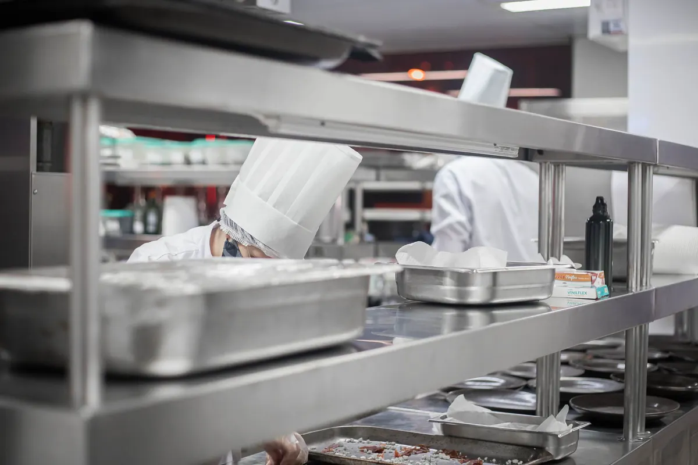

Quando a cozinha deixa de caber em freezers e geladeiras verticais
Esta página trata da câmara fria para restaurante e food service: cozinha de restaurante, hotel, bar, dark kitchen e cozinha industrial. O panorama geral de projeto, painel, piso e refrigeração para qualquer segmento está em câmaras frias em Vitória ES; o varejo de carnes tem página própria em câmara fria para açougue e supermercado; quem já tem a câmara e precisa de reparo encontra o serviço em manutenção de câmara fria; e a composição de custo está em quanto custa uma câmara fria.
A história costuma ser parecida. O restaurante abre com duas geladeiras e um freezer. O cardápio cresce, a compra passa a ser semanal para conseguir preço, entra um segundo turno de produção, e a cozinha vira uma fila de portas verticais. Cada equipamento tem seu compressor jogando calor dentro de um ambiente que já é quente por natureza, cada porta é aberta dezenas de vezes por serviço, e ninguém sabe ao certo em que temperatura está a carne guardada no fundo do terceiro freezer.
A troca por câmara fria faz sentido quando alguns destes sinais aparecem juntos:
- a compra não cabe e parte do produto fica fora da temperatura até abrir espaço;
- a cozinha perdeu área de bancada ou de circulação para equipamento de refrigeração;
- o calor dos compressores dos freezers pesa no conforto da equipe e no ar-condicionado;
- há perda recorrente de produto por falha de um equipamento isolado ou por porta mal fechada;
- a vigilância sanitária ou uma auditoria apontou falta de controle de temperatura.
Câmara fria não precisa ser grande. Em restaurante pequeno, bar ou dark kitchen, uma câmara fria pequena montada em painel, encaixada em um recuo, embaixo de escada ou em área de serviço, costuma substituir vários equipamentos verticais e liberar parede na cozinha. O que define o tamanho é o volume de compra somado ao giro diário — não o espaço que sobrou.
Câmara resfriada, congelada ou dupla com antecâmara
A escolha do tipo sai do cardápio e da logística de abastecimento, não do catálogo.
Câmara resfriada
É a mais comum em restaurante. Guarda carne fresca, hortifrúti, laticínio, frios, pré-preparos e bebidas. Opera em temperatura positiva, e a faixa de ajuste precisa atender o item mais exigente guardado ali. Atende bem quem recebe fornecedor várias vezes por semana e mantém pouco congelado.
Câmara de congelados
Opera a -18 °C ou menos. Entra quando a casa compra proteína congelada em volume, porciona e congela o próprio pré-preparo ou abastece mais de uma unidade a partir de uma cozinha central. Exige painel mais espesso, degelo mais robusto, resistência no batente da porta e cuidado com o piso, que precisa de isolamento para não congelar a base.
Câmara dupla, com antecâmara
São duas câmaras em sequência: a resfriada abre para a cozinha e a de congelados abre por dentro da resfriada. A porta do congelado nunca fica exposta ao ar quente e úmido da cozinha, o que reduz formação de gelo no evaporador, estabiliza a temperatura e diminui o consumo. Em hotel e em cozinha industrial com volume dos dois tipos de produto, costuma ser o arranjo mais eficiente por metro quadrado ocupado.
Porta aberta o dia todo: o rush é o que dimensiona a câmara
Em câmara de distribuidora, a porta abre algumas vezes por turno. Em restaurante, abre a cada pedido no pico do almoço e do jantar. Cada abertura troca ar frio e seco por ar quente e úmido da cozinha, e essa infiltração costuma ser uma das maiores parcelas da carga térmica — maior, muitas vezes, que o calor que atravessa as paredes. Câmara calculada só pelo volume em metros cúbicos, sem considerar o regime de abertura, é a que chega às 21h com o evaporador tomado de gelo e a temperatura subindo.
No cálculo de carga térmica de uma câmara de restaurante entram, além do isolamento:
- número de aberturas por serviço e tempo médio de porta aberta;
- temperatura em que o produto entra — mercadoria recebida e pré-preparo ainda morno;
- calor das pessoas que entram, da iluminação e dos ventiladores do evaporador;
- temperatura e umidade da cozinha no entorno da porta, que é bem diferente da do salão.
Três recursos reduzem o efeito da porta. A cortina de ar ou de lâminas de PVC corta boa parte da troca de ar enquanto a porta está aberta. O fechamento automático e a vedação em bom estado evitam a porta encostada que ninguém percebeu. E o layout ajuda: porta voltada para a área de preparo, não para a linha de cocção, e prateleiras organizadas para que o cozinheiro pegue o que precisa sem ficar procurando com a porta aberta.
Onde instalar a unidade condensadora: calor e ruído longe do salão
A unidade condensadora é a parte da câmara que joga para fora o calor retirado do produto. Ela precisa de ar fresco na entrada e de espaço livre para o ar quente sair sem voltar. Em restaurante, os erros mais frequentes são instalar a condensadora dentro da cozinha, em nicho fechado, ao lado da descarga da coifa ou em corredor sem ventilação. Ela passa a trabalhar com ar quente, a pressão de condensação sobe, o compressor consome mais e dura menos.
O ruído é o outro lado do problema. Compressor e ventilador perto do salão, da varanda ou da janela de um vizinho viram reclamação. Por isso o projeto define a posição da condensadora junto com a câmara, considerando:
- área técnica externa, laje ou corredor de serviço com ventilação cruzada;
- distância e traçado das linhas frigoríficas até a câmara, com isolamento adequado;
- afastamento da descarga da exaustão e das coifas da cozinha, para uma não aspirar o ar quente e engordurado da outra;
- acesso para limpeza do condensador e manutenção, sem depender de escada improvisada;
- suporte com amortecimento de vibração e proteção contra sol direto e chuva.
Em prédio comercial e shopping, a posição também passa pelas regras do condomínio. Vale levantar isso antes de fechar o layout da cozinha, não depois da câmara montada.

Organização interna e vigilância sanitária
Produto misturado é a regra em restaurante: carne, frango, pescado, hortifrúti, laticínio, molhos e pré-preparos dividindo o mesmo espaço. A câmara precisa ser pensada para isso desde o projeto, com prateleiras no número e na altura certos, e não só como uma caixa fria.
Prateleiras, separação e circulação de ar
- prateleiras em material liso, lavável e resistente à corrosão, como inox ou polímero próprio para câmara;
- nada apoiado direto no piso e afastamento das paredes para o ar circular;
- carnes e produtos crus nas prateleiras inferiores, prontos e pré-preparos acima;
- saída de ar do evaporador livre — caixa empilhada na frente do ventilador derruba a capacidade da câmara;
- tudo em recipiente fechado e etiquetado com produto, data de manipulação e validade.
PVPS e PEPS
O giro segue o critério PVPS (primeiro que vence, primeiro que sai) ou PEPS (primeiro que entra, primeiro que sai). Na prática, isso significa prateleira com lado de reposição e lado de retirada e etiqueta legível sem mover a pilha. Câmara abarrotada e sem ordem é a que acumula produto vencido no fundo.
Registro de temperatura e boas práticas
A referência nacional para boas práticas em serviços de alimentação é a RDC 216/2004 da ANVISA, que trata, entre outros pontos, do controle de temperatura no armazenamento de alimentos refrigerados e congelados, junto com a legislação estadual e municipal. A fiscalização costuma pedir termômetro funcionando, leitura em horários definidos e registro guardado. Controlador digital com sensor calibrado, registro por datalogger e alarme de temperatura alta e de porta aberta tiram essa rotina da planilha de papel e deixam a comprovação pronta para a visita da vigilância sanitária ou para a auditoria da rede.
Consumo de energia, manutenção e quanto a câmara pesa no mês
Em restaurante, a câmara fria funciona o ano inteiro, sem folga. O que decide o consumo é o conjunto: isolamento na espessura certa, vedação de porta em bom estado, cortina de ar, condensadora ventilada e degelo bem ajustado. Uma câmara bem dimensionada costuma consumir menos que o conjunto de equipamentos verticais que substitui, porque um único sistema dimensionado para a carga real trabalha em regime mais estável — mas só se os pontos acima forem respeitados.
O ambiente de cozinha é agressivo para o equipamento: gordura em suspensão, farinha, calor e limpeza com água. Condensador sujo, dreno entupido e borracha de porta ressecada são as falhas que mais aparecem, e todas elas começam como aumento de conta de energia antes de virar perda de produto. O plano de manutenção preventiva da câmara fria precisa estar definido desde a entrega. Se o restaurante tem sistema de climatização no salão, ele segue o PMOC de ar-condicionado, que é um documento separado do plano da câmara.
Para entender o que compõe o preço — tipo de câmara, dimensões, espessura de painel, porta, sistema de refrigeração, instalação e acabamento — consulte a página sobre quanto custa uma câmara fria na Grande Vitória. Quando a câmara precisa de documento técnico para vistoria, contrato ou seguro, emitimos laudo técnico com ART.
Perguntas frequentes sobre câmara fria para restaurante
Vale a pena trocar freezers e geladeiras verticais por uma câmara fria?
Vale quando os equipamentos passam a atrapalhar mais do que ajudam: várias portas espalhadas pela cozinha, cada uma com seu compressor jogando calor no ambiente, produto que não cabe na compra semanal, porta aberta o tempo todo no serviço e dificuldade de manter a temperatura estável. Uma câmara concentra o estoque em um único volume isolado, com um sistema de refrigeração dimensionado para aquela carga e a unidade condensadora fora da cozinha. A decisão sai da comparação entre o espaço disponível, o volume de compra e o giro diário, não do preço do equipamento isolado.
Câmara resfriada, congelada ou dupla: qual o restaurante precisa?
Depende do cardápio e da logística de compra. Restaurante que recebe carne, hortifrúti e laticínio várias vezes por semana costuma resolver com câmara resfriada e mantém poucos congelados em freezer. Quem compra congelado em volume, trabalha com pré-preparo porcionado ou tem mais de uma unidade abastecida por uma cozinha central precisa de câmara de congelados. A câmara dupla, com a congelada acessada por dentro da resfriada, funciona como antecâmara: a porta do congelado nunca abre para a cozinha quente, o que reduz gelo no evaporador e consumo.
Onde instalar a unidade condensadora da câmara do restaurante?
Em local ventilado, com espaço livre para o ar quente sair sem voltar para a entrada do próprio condensador, e longe do salão e das janelas de vizinhos por causa do ruído. Área técnica externa, laje ou corredor de serviço costumam ser as opções. Condensadora instalada dentro da cozinha, ao lado da coifa ou em nicho fechado trabalha com ar quente, consome mais e falha mais cedo. A distância até a câmara define o traçado e o isolamento das linhas frigoríficas e precisa entrar no projeto.
A vigilância sanitária exige registro de temperatura da câmara do restaurante?
O controle de temperatura dos alimentos refrigerados e congelados faz parte das boas práticas em serviços de alimentação, e a referência nacional é a RDC 216/2004 da ANVISA, complementada pela legislação estadual e municipal. Na prática, a fiscalização espera ver termômetro funcionando, leitura em horários definidos e registro guardado, em planilha ou por datalogger, além de manual de boas práticas e procedimentos que descrevam a rotina. Câmara com controlador e registro automático facilita a comprovação.
Dá para guardar carne, hortifrúti e laticínio na mesma câmara?
Dá, desde que haja organização e separação física: produtos crus separados dos prontos, carnes nas prateleiras inferiores para não gotejar sobre os demais, tudo em recipiente fechado e identificado, nada encostado no piso ou nas paredes e nada bloqueando a saída de ar do evaporador. A temperatura da câmara precisa atender o item mais exigente armazenado. Quando o volume de carne ou de hortifrúti é grande, compensa separar em câmaras ou compartimentos com temperaturas diferentes.
Câmara fria para restaurante na Grande Vitória
Projeto, montagem e adequação para restaurantes, hotéis, bares e cozinhas industriais da região:
Vai abrir, ampliar ou reformar a cozinha?
Mande a planta ou fotos da cozinha, o cardápio e o volume de compra. Retornamos com o tipo de câmara e a proposta.